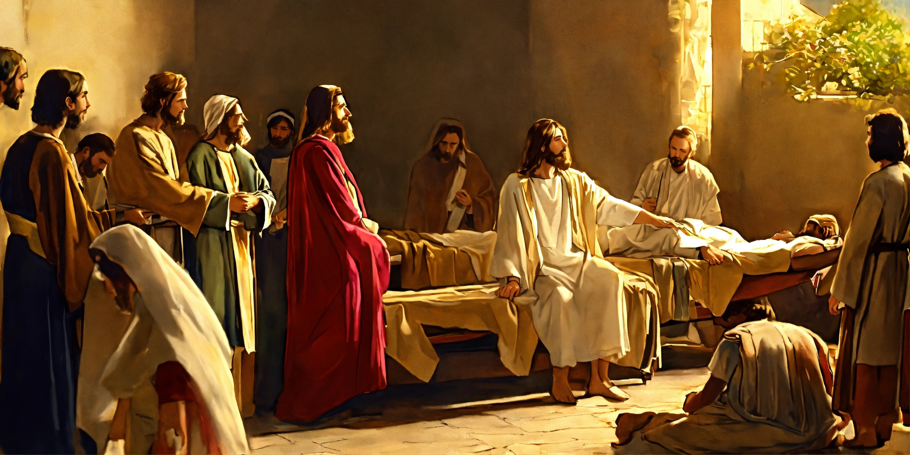

Historia del Cristianismo: Un Relato Guiado por las Sagradas Escrituras 🕊️⛪
Sumérgete en la fascinante historia del cristianismo, un viaje espiritual que se despliega a través de las páginas de la Biblia. Descubriremos cómo las enseñanzas de Jesucristo y los eventos sagrados han moldeado la fe cristiana a lo largo de los siglos. ¡Acompáñanos en este recorrido bíblico! 🌟
Los Inicios y Fundamentos 🌍
La historia del cristianismo tiene sus raíces en las palabras de Jesucristo,
quien proclamó: "En el principio era el Verbo, y el Verbo era con Dios, y el Verbo
era Dios." (Juan 1:1). A través de sus enseñanzas y acciones, Cristo
sentó las bases de una fe que cambiaría el curso de la historia. 🌈
Principios Esenciales de la Fe 🙏
La esencia del cristianismo se encuentra en el amor y la compasión, como
Jesús enseñó: "Un mandamiento nuevo os doy: Que os améis los unos a los otros;
como yo os he amado, que también os améis los unos a los otros." (Juan 13:34).
La creencia en la Trinidad, expresada en "Bautizándolos en el nombre del Padre, del
Hijo y del Espíritu Santo." (Mateo 28:19), refleja la relación íntima
de los creyentes con la divinidad. ⛪
Vida de Oración y Comunión 🔗
La oración, como insta la Biblia, es un pilar fundamental:
"Orad sin cesar." (1 Tesalonicenses 5:17). Las iglesias, lugares
donde los creyentes se reúnen para buscar a Dios, reflejan la importancia
de una relación continua con el Creador. 🛐
Valores y Ética Cristiana 🌈
La ética cristiana se basa en principios bíblicos, como el llamado a la
honestidad y la caridad: "Honrad a todos. Amad a los hermanos. Temed a
Dios. Honrad al rey." (1 Pedro 2:17). Estos valores guían la vida
cotidiana de los seguidores de Cristo. 💖
Contribuciones a la Sociedad 🌍
A lo largo de la historia, el cristianismo ha influido en el arte, la
filosofía y la justicia social. La fe cristiana ha dejado una huella
profunda en la cultura y el pensamiento, como nos recuerda:
"Vosotros sois la luz del mundo." (Mateo 5:14). 🤝
Explora y Descubre 🚀
Te invitamos a explorar más sobre la historia del cristianismo a través de las Escrituras. Que este viaje espiritual te revele capas profundas de significado y te acerque más a la presencia de Dios. 🌌